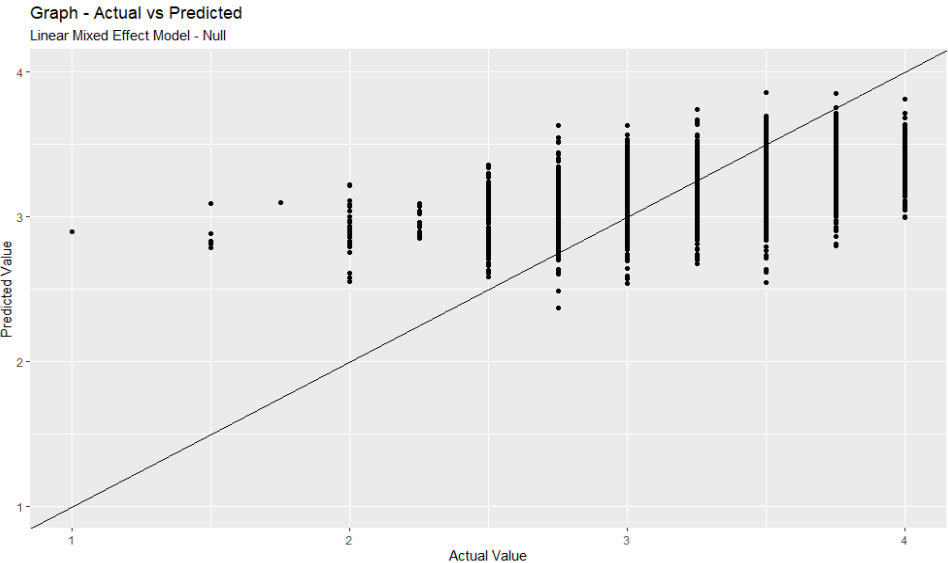

Photo by RhondaK Native Florida Folk Artist on Unsplash
In this post, I will be exploring the linear mixed effect model.
What is a mixed effect model?
In real life, data is often messy. The data might have some “grouping”, “clustering” or “hierarchical” within the dataset.
This is where we could use mixed effect model to take into account the “grouping”, “clustering” or “hierarchical” within the dataset while fitting the model.
It seems like the mixed effect model has different names under different disciplines (Clark):
Variance components
Random intercepts and slopes
Random effects
Random coefficients
Varying coefficients
Intercepts- and/or slopes-as-outcomes
Hierarchical linear models
Multilevel models (implies multiple levels of hierarchically clustered data)
Growth curve models (possibly Latent GCM)
Mixed effects models
Fixed effect vs random effect
Below is the difference between fixed and random effect (Shrikanth):
Fixed effect - the predictor variable, i.e. the effect we are trying to measure after accounting for random variability
Random effect - best defined as a noise in the data. It arises from uncontrollable variability within the sample
Intraclass Correlation Coefficient (ICC)
Another important concept for mixed effect models is the intraclass correlation coefficient.
As suggested by the author(Kumar 2023), it is recommended to calculate the ICC before fitting a random effect model.
The ICC formula can be written as follows:
\[\rho=\frac{group\ variance}{group\ variance + residual\ variance}\]
Effectively, ICC tells us how “strongly” clustered the data is.
According to the documentation page of the ICC function, The ICC is a value between 0 and 1, where values below 0.5 indicate poor reliability, between 0.5 and 0.75 moderate reliability, between 0.75 and 0.9 good reliability, and any value above 0.9 indicates excellent reliability.
The author also suggested that the ICC should be calculated on an “empty” or “null” model.
Model Building Strategy
To build the model, the author suggested building some simple, preliminary models so that they can be used to evaluate the larger models (Roback and Legler 2021).
With that, we will start by performing extensive exploratory data analysis at each level.
Demonstration
In this demonstration, I will be using lmer function from lme4 package to explain the model.
I will be using multilevelmod package to assist me in building the models by using functions from tidymodels package.
Setup the environment
First, I will call the relevant packages to set up the environment.
pacman::p_load(tidyverse, tidymodels, ingredients, multilevelmod, lme4, janitor, broom.mixed, tidyr)Import the data
I will use this chocolate rating data from tidytuesday for this demonstration.
Photo by Pushpak Dsilva on Unsplash
df <-
read_csv("https://raw.githubusercontent.com/rfordatascience/tidytuesday/master/data/2022/2022-01-18/chocolate.csv") %>%
clean_names()As there are too many company locations, I will group the locations with lesser count as “others”.
recode_company_location <-
tabyl(df$company_location) %>%
as_tibble() %>%
arrange(desc(percent)) %>%
rename(company_location = `df$company_location`) %>%
mutate(cumsum = cumsum(percent),
company_location_recode = case_when(cumsum >= 0.8 ~ "others",
TRUE ~ company_location)) %>%
select(c(company_location, company_location_recode))Once that is done, I will wrangle & clean up the data before building the model.
df_1 <-
df %>%
# for simplicity, drop the missing value
drop_na() %>%
# mutate the cocoa percent column so that the info is in numeric format
mutate(cocoa_percent = str_replace(cocoa_percent, "%", ""),
cocoa_percent = as.numeric(cocoa_percent)) %>%
# join with the recode data and rename the recoded column
left_join(recode_company_location) %>%
select(-company_location) %>%
rename(company_location = company_location_recode) %>%
# split the ingredient columns
separate_wider_delim(ingredients,
delim = "-",
names = c("num_ingredients", "components")) %>%
# create dummy variables to capture the ingredients in the chocolate
mutate(contain_salt = if_else(str_detect(components, "\\Sa"),1,0),
contain_lecithin = if_else(str_detect(components, "\\L"),1,0),
contain_vanilla = if_else(str_detect(components, "\\V"),1,0),
contain_cocoa = if_else(str_detect(components, "\\C"),1,0),
contain_other_sweet = if_else(str_detect(components, "\\S*"),1,0),
contain_bean = if_else(str_detect(components, "\\B"),1,0)) %>%
# create dummy variables to capture tastes
mutate(taste_fruity = if_else(
str_detect(most_memorable_characteristics,
paste(c("orange","lemon","fruit","banana","strawberry","melon","berry","cherry"),
collapse = "|")),
1,0),
taste_sweet = if_else(str_detect(most_memorable_characteristics, "sweet"),1,0),
taste_earthy = if_else(str_detect(most_memorable_characteristics, "earthy"),1,0),
taste_cocoa = if_else(str_detect(most_memorable_characteristics, "cocoa"),1,0),
taste_nutty =
if_else(str_detect(most_memorable_characteristics,
paste(c("nutty","nut","nuts"),
collapse = "|")),
1,0),
taste_sour = if_else(str_detect(most_memorable_characteristics, "sour"),1,0),
taste_intense = if_else(str_detect(most_memorable_characteristics, "intense"),1,0),
taste_rich = if_else(str_detect(most_memorable_characteristics, "rich"),1,0),
taste_mild = if_else(str_detect(most_memorable_characteristics, "mild"),1,0),
taste_fatty = if_else(str_detect(most_memorable_characteristics, "fatty"),1,0),
taste_creamy = if_else(str_detect(most_memorable_characteristics, "creamy"),1,0),
taste_roast = if_else(str_detect(most_memorable_characteristics, "roasty"),1,0),
taste_bitter = if_else(str_detect(most_memorable_characteristics, "bitter"),1,0),
taste_burnt = if_else(str_detect(most_memorable_characteristics, "burnt"),1,0),
taste_spicy = if_else(
str_detect(most_memorable_characteristics,
paste(c("spicy","pepper","spice"),
collapse = "|")),
1,0),
taste_sandy = if_else(str_detect(most_memorable_characteristics, "sandy"),1,0)
)Model Building
Null Model
First, I will first fit a random intercept model.
I will first define the model I want to build.
lmer_specs <-
linear_reg() %>%
set_engine("lmer")Then, I will fit the model by indicating the formula and dataset.
lmer_fit <-
lmer_specs %>%
fit(rating ~ 1 + (1|company_manufacturer), data = df_1)We could call the fitted model results by indicating fit object.
lmer_fit$fitLinear mixed model fit by REML ['lmerMod']
Formula: rating ~ 1 + (1 | company_manufacturer)
Data: data
REML criterion at convergence: 2502.819
Random effects:
Groups Name Std.Dev.
company_manufacturer (Intercept) 0.2180
Residual 0.3688
Number of obs: 2443, groups: company_manufacturer, 542
Fixed Effects:
(Intercept)
3.146 Alternatively, we could pass the fit object to the summary function.
summary(lmer_fit$fit)Linear mixed model fit by REML ['lmerMod']
Formula: rating ~ 1 + (1 | company_manufacturer)
Data: data
REML criterion at convergence: 2502.8
Scaled residuals:
Min 1Q Median 3Q Max
-4.8763 -0.6462 0.0697 0.6994 2.8232
Random effects:
Groups Name Variance Std.Dev.
company_manufacturer (Intercept) 0.04751 0.2180
Residual 0.13602 0.3688
Number of obs: 2443, groups: company_manufacturer, 542
Fixed effects:
Estimate Std. Error t value
(Intercept) 3.14640 0.01311 239.9Based on the results above, we noted the following:
On average, the chocolate rating is 3.14
Group variance is 0.047
Residual variance is 0.136
We could calculate the ICC by using the info above:
\(\rho=\frac{0.047}{0.047 + 0.136}\) = 0.2588678
Another method is to use icc function from performance package to calculate the necessary figure.
icc(lmer_fit$fit)# Intraclass Correlation Coefficient
Adjusted ICC: 0.259
Unadjusted ICC: 0.259According to the documentation page, following are the explanations:
Adjusted ICC: Only looks at the random effects
Unadjusted ICC: Also takes the fixed effects variances into account
Question: How to interpret the two ICCs figures?
icc(lmer_fit$fit, by_group = TRUE)# ICC by Group
Group | ICC
----------------------------
company_manufacturer | 0.259Model Performance
Next, I will check the model performance.
performance::model_performance(lmer_fit$fit)# Indices of model performance
AIC | AICc | BIC | R2 (cond.) | R2 (marg.) | ICC | RMSE | Sigma
--------------------------------------------------------------------------------
2508.819 | 2508.829 | 2526.222 | 0.259 | 0.000 | 0.259 | 0.347 | 0.369From the results above, we noted that there are R2 (cond.) and R2 (marg.).
Below is the explanation on both R2 extracted from this article:
Marginal R2 is concerned with variance explained by fixed factors
Conditional R2 is concerned with variance explained by both fixed and random factors.
One important note is the definitions of the R2 above are slightly different from the traditional R2.
This article discussed the difference in R2 definitions.
Nevertheless, we could call the model performance by using glance function, summ function or report function as shown below.
lmer_fit %>%
glance()# A tibble: 1 x 7
nobs sigma logLik AIC BIC REMLcrit df.residual
<int> <dbl> <dbl> <dbl> <dbl> <dbl> <int>
1 2443 0.369 -1251. 2509. 2526. 2503. 2440This method I found online is also pretty cool. I love how it “tidies” the results so that it is easier to read.
summ(lmer_fit$fit)| Observations | 2443 |
| Dependent variable | rating |
| Type | Mixed effects linear regression |
| AIC | 2508.82 |
| BIC | 2526.22 |
| Pseudo-R² (fixed effects) | 0.00 |
| Pseudo-R² (total) | 0.26 |
| Est. | S.E. | t val. | d.f. | p | |
|---|---|---|---|---|---|
| (Intercept) | 3.15 | 0.01 | 239.81 | 476.37 | 0.00 |
| p values calculated using Kenward-Roger standard errors and d.f. |
| Group | Parameter | Std. Dev. |
|---|---|---|
| company_manufacturer | (Intercept) | 0.22 |
| Residual | 0.37 |
| Group | # groups | ICC |
|---|---|---|
| company_manufacturer | 542 | 0.26 |
Or use report function to show the summarised model results.
report(lmer_fit$fit) %>%
as.data.frame()Parameter | Coefficient | 95% CI | t(2440) | p | Effects | Group | Std. Coef. | Std. Coef. 95% CI | Fit
--------------------------------------------------------------------------------------------------------------------------------------------
(Intercept) | 3.15 | [3.12, 3.17] | 239.93 | < .001 | fixed | | -0.15 | [-0.21, -0.09] |
| 0.22 | | | | random | company_manufacturer | | |
| 0.37 | | | | random | Residual | | |
| | | | | | | | |
AIC | | | | | | | | | 2508.82
AICc | | | | | | | | | 2508.83
BIC | | | | | | | | | 2526.22
R2 (conditional) | | | | | | | | | 0.26
R2 (marginal) | | | | | | | | | 0.00
Sigma | | | | | | | | | 0.37Prediction
We could extract the prediction by using augment function from tidymodels package.
prediction_df <-
lmer_fit %>%
augment(df_1)
prediction_df# A tibble: 2,443 x 35
ref company_man~1 revie~2 count~3 speci~4 cocoa~5 num_i~6 compo~7
<dbl> <chr> <dbl> <chr> <chr> <dbl> <chr> <chr>
1 2454 5150 2019 Tanzan~ Kokoa ~ 76 3 " B,S,~
2 2458 5150 2019 Domini~ Zorzal~ 76 3 " B,S,~
3 2454 5150 2019 Madaga~ Bejofo~ 76 3 " B,S,~
4 2542 5150 2021 Fiji Matasa~ 68 3 " B,S,~
5 2546 5150 2021 Venezu~ Sur de~ 72 3 " B,S,~
6 2546 5150 2021 Uganda Semuli~ 80 3 " B,S,~
7 2542 5150 2021 India Anamal~ 68 3 " B,S,~
8 797 A. Morin 2012 Bolivia Bolivia 70 4 " B,S,~
9 797 A. Morin 2012 Peru Peru 63 4 " B,S,~
10 1011 A. Morin 2013 Panama Panama 70 4 " B,S,~
# ... with 2,433 more rows, 27 more variables:
# most_memorable_characteristics <chr>, rating <dbl>,
# company_location <chr>, contain_salt <dbl>,
# contain_lecithin <dbl>, contain_vanilla <dbl>,
# contain_cocoa <dbl>, contain_other_sweet <dbl>,
# contain_bean <dbl>, taste_fruity <dbl>, taste_sweet <dbl>,
# taste_earthy <dbl>, taste_cocoa <dbl>, taste_nutty <dbl>, ...ggplot(prediction_df,
aes(x = rating, y = .pred)) +
geom_point() +
geom_abline(slope = 1, intercept = 0) +
xlab("Actual Value") +
ylab("Predicted Value") +
labs(title = "Graph - Actual vs Predicted",
subtitle = "Linear Mixed Effect Model - Null")
Bigger model
Next, I will build a bigger model.
lmer_fit_bigger <-
linear_reg() %>%
set_engine("lmer") %>%
fit(rating ~
ref
+ company_location
+ cocoa_percent
+ review_date
+ num_ingredients
+ contain_salt
+ contain_lecithin
+ contain_cocoa
+ taste_fruity
+ taste_sweet
+ taste_earthy
+ taste_cocoa
+ taste_nutty
+ taste_sour
+ taste_intense
+ taste_rich
+ taste_mild
+ taste_fatty
+ taste_creamy
+ taste_roast
+ taste_bitter
+ taste_burnt
+ taste_spicy
+ taste_sandy
+ (1|company_manufacturer),
data = df_1)Next, I will use summ function to summarise the model result.
summ(lmer_fit_bigger$fit)| Observations | 2443 |
| Dependent variable | rating |
| Type | Mixed effects linear regression |
| AIC | 2133.21 |
| BIC | 2371.05 |
| Pseudo-R² (fixed effects) | 0.24 |
| Pseudo-R² (total) | 0.39 |
| Est. | S.E. | t val. | d.f. | p | |
|---|---|---|---|---|---|
| (Intercept) | -59.84 | 35.26 | -1.70 | 2291.43 | 0.09 |
| ref | -0.00 | 0.00 | -1.15 | 2263.32 | 0.25 |
| company_locationBelgium | -0.12 | 0.10 | -1.23 | 441.20 | 0.22 |
| company_locationCanada | -0.12 | 0.09 | -1.44 | 466.26 | 0.15 |
| company_locationEcuador | -0.14 | 0.10 | -1.33 | 503.62 | 0.18 |
| company_locationFrance | -0.07 | 0.09 | -0.75 | 406.06 | 0.46 |
| company_locationGermany | -0.08 | 0.11 | -0.66 | 483.12 | 0.51 |
| company_locationItaly | -0.08 | 0.10 | -0.78 | 402.30 | 0.44 |
| company_locationothers | -0.11 | 0.08 | -1.45 | 494.33 | 0.15 |
| company_locationSpain | -0.02 | 0.12 | -0.17 | 427.03 | 0.86 |
| company_locationSwitzerland | -0.12 | 0.11 | -1.07 | 447.13 | 0.28 |
| company_locationU.K. | -0.25 | 0.09 | -2.89 | 462.93 | 0.00 |
| company_locationU.S.A. | -0.16 | 0.08 | -2.07 | 488.72 | 0.04 |
| cocoa_percent | -0.00 | 0.00 | -2.17 | 2401.07 | 0.03 |
| review_date | 0.03 | 0.02 | 1.79 | 2291.30 | 0.07 |
| num_ingredients2 | 0.05 | 0.15 | 0.34 | 2170.10 | 0.73 |
| num_ingredients3 | -0.26 | 0.17 | -1.52 | 2393.48 | 0.13 |
| num_ingredients4 | -0.45 | 0.18 | -2.46 | 2400.34 | 0.01 |
| num_ingredients5 | -0.53 | 0.19 | -2.72 | 2332.21 | 0.01 |
| num_ingredients6 | -0.55 | 0.29 | -1.87 | 2012.93 | 0.06 |
| contain_salt | -0.10 | 0.09 | -1.02 | 1102.38 | 0.31 |
| contain_lecithin | 0.12 | 0.05 | 2.56 | 881.64 | 0.01 |
| contain_cocoa | 0.34 | 0.09 | 3.80 | 1774.29 | 0.00 |
| taste_fruity | 0.20 | 0.02 | 12.10 | 2320.76 | 0.00 |
| taste_sweet | -0.11 | 0.02 | -4.57 | 2402.82 | 0.00 |
| taste_earthy | -0.13 | 0.03 | -4.80 | 2351.91 | 0.00 |
| taste_cocoa | 0.15 | 0.02 | 7.54 | 2330.62 | 0.00 |
| taste_nutty | 0.10 | 0.02 | 5.19 | 2334.65 | 0.00 |
| taste_sour | -0.17 | 0.03 | -6.38 | 2333.30 | 0.00 |
| taste_intense | 0.02 | 0.03 | 0.66 | 2314.37 | 0.51 |
| taste_rich | 0.16 | 0.03 | 5.11 | 2291.11 | 0.00 |
| taste_mild | 0.07 | 0.03 | 2.87 | 2337.86 | 0.00 |
| taste_fatty | -0.11 | 0.03 | -3.54 | 2394.49 | 0.00 |
| taste_creamy | 0.21 | 0.03 | 7.50 | 2325.85 | 0.00 |
| taste_roast | -0.02 | 0.03 | -0.80 | 2314.03 | 0.42 |
| taste_bitter | -0.23 | 0.04 | -5.67 | 2334.66 | 0.00 |
| taste_burnt | -0.25 | 0.04 | -5.88 | 2310.41 | 0.00 |
| taste_spicy | 0.14 | 0.02 | 6.05 | 2278.74 | 0.00 |
| taste_sandy | -0.07 | 0.03 | -2.25 | 2397.80 | 0.02 |
| p values calculated using Kenward-Roger standard errors and d.f. |
| Group | Parameter | Std. Dev. |
|---|---|---|
| company_manufacturer | (Intercept) | 0.17 |
| Residual | 0.33 |
| Group | # groups | ICC |
|---|---|---|
| company_manufacturer | 542 | 0.20 |
We could also use anova function to check whether there is an improvement in model fit.
anova(lmer_fit$fit, lmer_fit_bigger$fit)Data: data
Models:
lmer_fit$fit: rating ~ 1 + (1 | company_manufacturer)
lmer_fit_bigger$fit: rating ~ ref + company_location + cocoa_percent + review_date + num_ingredients + contain_salt + contain_lecithin + contain_cocoa + taste_fruity + taste_sweet + taste_earthy + taste_cocoa + taste_nutty + taste_sour + taste_intense + taste_rich + taste_mild + taste_fatty + taste_creamy + taste_roast + taste_bitter + taste_burnt + taste_spicy + taste_sandy + (1 | company_manufacturer)
npar AIC BIC logLik deviance Chisq Df
lmer_fit$fit 3 2502.0 2519.4 -1248.0 2496.0
lmer_fit_bigger$fit 41 1929.6 2167.4 -923.8 1847.6 648.4 38
Pr(>Chisq)
lmer_fit$fit
lmer_fit_bigger$fit < 2.2e-16 ***
---
Signif. codes: 0 '***' 0.001 '**' 0.01 '*' 0.05 '.' 0.1 ' ' 1As the p-value is less than 0.05, we reject the null hypothesis and conclude that the additional variables improve the model fit.
Other considerations
If the model fails to converge, this post offers some suggestions on how we can fix the issue.
Alternatively, this author offers suggestions on how we could fix singularity and convergence issues.
Conclusion
That’s all for the day!
Thanks for reading the post until the end.
Feel free to contact me through email or LinkedIn if you have any suggestions on future topics to share.
Refer to this link for the blog disclaimer.
Till next time, happy learning!
Photo by Danny Lines on Unsplash